▲ 소나무 숲 너머로 호수와 먼 산이 보이는 화진포 조망. 한국관광공사 사진이다. 사진=한국관광공사
고성 통일전망대는 "그냥 차로 가서 보면 되는 곳"이 아니다. 고성군 관광포털의 안내대로 통일안보공원에서 출입신고서를 쓰고(대표자 주민등록증 지참), 안보교육 영상을 7분 본 뒤, 타고 온 자차로 10분을 더 들어가야 한다. 2026년 1월에는 "출입 통제 없이 자유롭게 드나들 수 있을 전망"이라는 YTN 보도가 나왔지만, 고성군 관광포털 통일전망대 안내 페이지(2025년 10월 15일 최종 수정)에는 여전히 출입신고 절차가 적혀 있다. 이 글은 두 정보가 어긋나는 지점을 숨기지 않고, 동해안 북단 하루(통일전망대 + 화진포 호수·세 별장 + 7번 국도 연계)를 확인된 숫자 중심으로 정리했다. 임진각·연천 DMZ는 이미 다룬 적이 있어 다루지 않는다.
1. 지금 통일전망대는 열려 있나 — 공식 안내와 보도의 차이
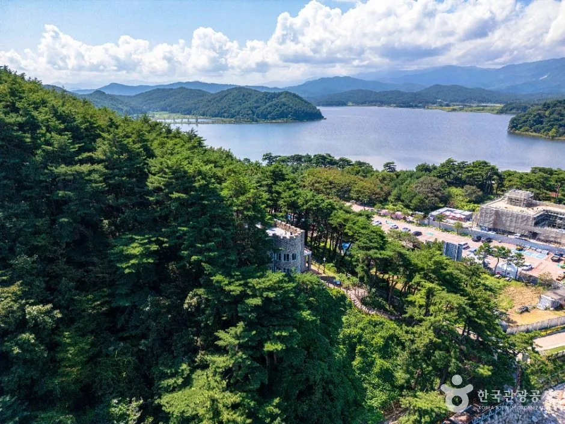
▲ 소나무 숲 너머로 호수가 보이는 화진포 일대 항공 사진. 한국관광공사 사진 목록에는 김일성 별장 일대로 등록돼 있다. 사진=한국관광공사
고성군 관광포털은 통일전망대를 고성8경 중 제6경으로 소개한다. 1984년 지어졌고 해발 70m 고지 위에 있으며, 금강산이 가깝게는 16km, 멀리는 25km 거리로 해금강 대부분이 한눈에 보인다는 설명이다. 소개 페이지(2025년 10월 15일 최종 수정)에는 출입신고서 작성·교육 7분·이동 10분 절차가, 요금 안내 페이지(2025년 12월 27일 최종 수정)에는 출입시간 09:00~16:50, 연중무휴, 문의 033-682-0088이 적혀 있다.
반면 YTN은 2026년 1월 19일 강원특별자치도가 국방부와 협의해 접경지 군사규제를 완화했다고 전하며 "고성 통일전망대도 출입 통제 없이 자유롭게 드나들 수 있을 전망"이라고 보도했다. 같은 기사에는 "민통선이 쭉 통일전망대까지 올라가니까 완전히 자유롭게 이용할 수 있게 됐다"는 발언도 있다. 다만 '전망'이라는 표현이어서 이미 시행됐다는 뜻으로 읽기 어렵고, 이후 공식 안내 페이지의 출입신고 절차가 바뀌었다는 공지는 이번 조사에서 찾지 못했다. 2026년 7월 한 여행 매체도 출입신고·교육 절차를 그대로 안내하며 "군사작전이나 기상 상황에 따라 출입이 조정될 수 있으니 출발 당일 운영 여부와 마지막 입장 시간을 확인하라"고 적었다.
이번 재확인에서도 상황은 같았다. 고성군·통일전망대의 출입 절차 폐지 공지나 2026년 시행 보도는 찾지 못했다. 6월 17일 국방부가 군사시설 규제 개선 방안(민통선 일부 북상 등)을 발표했다는 보도(뉴스토마토)가 있으나, 이 보도에는 고성 통일전망대의 출입 절차나 시행일이 언급돼 있지 않다. 따라서 '자유화'가 실제 출입 방식으로 바뀌었는지는 여전히 확인하지 못한 상태다.
| 항목 | 내용 | 출처·확인 상태 |
|---|---|---|
| 출입신고·안보교육 절차 | 유지(대표자 주민등록증 → 교육 7분 → 이동 10분) | 고성군 관광포털 소개 페이지(2025-10-15 수정), 2026년 7월 여행 매체 |
| 출입 자유화(YTN 2026-01-19) | "자유롭게 드나들 수 있을 전망" | 보도상 전망, 시행 확인하지 못함 |
| 군사작전·기상에 따른 조정 | 출입이 조정될 수 있음 | 2026년 7월 여행 매체(단일 출처) |
| 국방부 군사시설 규제 개선(2026-06-17 발표 보도) | 민통선 등 규제 완화 방향 | 뉴스토마토 보도, 통일전망대 출입 절차 언급 없음 |
| 당일 운영 확인 | 통일전망대 033-682-0088 | 고성군 관광포털 문의처 |
공식 안내(요금·출입 절차·시간)는 고성군 관광포털에서 확인할 수 있다. 고성군 통일전망대 안내 바로가기
2. 출입 절차와 요금 — 신분증·차량·시간 한 장 정리
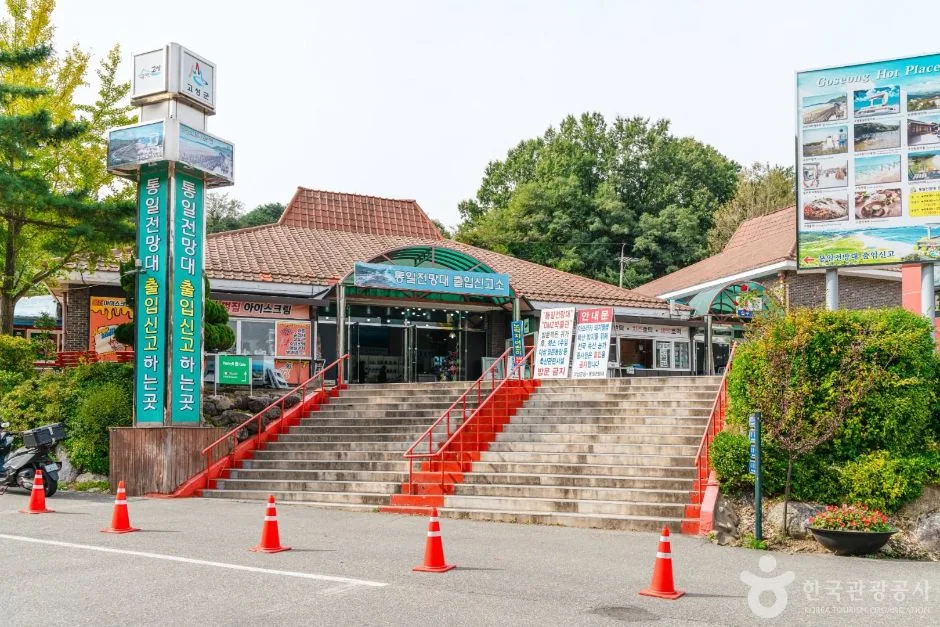
▲ 통일안보공원의 출입신고소 건물. 이곳에서 출입신고와 안보교육이 진행된다. 사진=한국관광공사
출입은 통일안보공원(고성군 현내면 금강산로 481)에서 시작한다. 고성군 안내는 이 절차를 세 단계로 설명한다. 출입신고서 작성(대표자 주민등록증 지참), 통일안보공원 교육관(600석)에서 7분간 슬라이드 관람, 타고 온 자차로 통일전망대까지 이동(10분)이다. 한국관광공사 여행기사는 신고서에 대표자 인적사항·차량번호·차종·인원을 적는다고 소개한다. 중간에 제진검문소를 지난다는 설명도 같은 계열 기사에 있다. 화물차·이륜차·자전거·도보로는 출입할 수 없다.
| 구분 | 개인 | 단체(30인 이상) | 비고 |
|---|---|---|---|
| 어른 | 3,000원 | 2,000원 | 고성군민 50% 할인 |
| 65세 이상 | 1,500원 | 1,000원 | |
| 학생 | 1,500원 | 1,200원 | 요금표 기준(학생·경로 동일 1,500원) |
| 무료 | 국가유공자, 1~3급 장애인 | 고성군 안내 | |
| 주차(별도) | 11인승 미만 5,000원 / 11인승 이상 6,000원 / 학교단체 10인승 이상 6,000원 | 요금표에 별도 표기 |
| 구분 | 시간 | 확인 사항 |
|---|---|---|
| 일반 | 09:00~16:50 | 기본 시간표. 하절기·동절기 적용 기간은 공식 페이지에 명시되지 않음 |
| 하절기 | 09:00~17:50(요금 페이지) 또는 17:30(전망대 소개 페이지) | 두 페이지 표기가 다름, 확인하지 못함 |
| 동절기 | 09:00~15:50 | 적용 시작일 공식 미표기 |
| 휴무 | 연중무휴 | |
| 관람 마감 | 18:00까지 관람 | 안보공원에 최종 "출입시간" 전까지 도착해야 입장 가능 |
하절기·동절기가 정확히 언제부터인지는 공식 페이지에 적혀 있지 않아 확인하지 못했다. 다만 기본 출입시간이 16:50이므로 10월 초에 방문한다면 16:50 이전에 안보공원에 도착해야 한다고 보는 것이 안전하다. 신고·교육 7분과 이동 10분을 감안하면 15시 안팎까지 들어가는 일정을 권한다(카프리즘 추정). 동승자 신분증 지참 여부는 공식 안내에 대표자 신분증만 적혀 있어 확인하지 못했고, 가급적 모두 지참하는 편이 낫다.
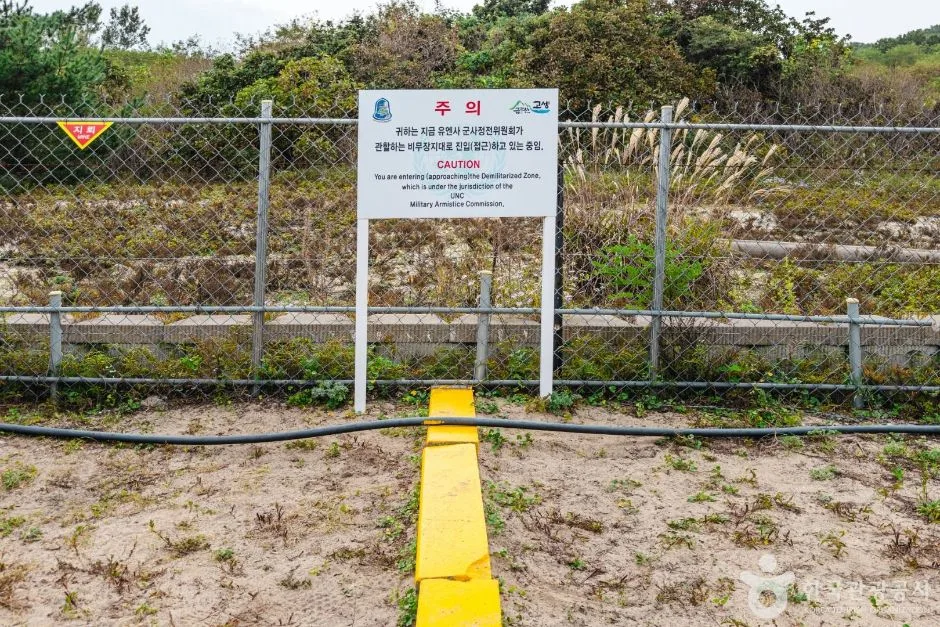
▲ DMZ 평화의 길 통일전망대 코스 목록에 등록된 경계 구간. 철책과 표지판, 바닥의 노란 선이 보인다. 사진=한국관광공사
| 순서 | 할 일 | 준비물·소요 |
|---|---|---|
| 1 | 출발 전 전화로 당일 운영·출입 방식 확인 | 033-682-0088 |
| 2 | 통일안보공원 도착, 출입신고서 작성 | 대표자 주민등록증, 차량번호·차종·인원 |
| 3 | 안보교육(슬라이드) 관람 | 약 7분 |
| 4 | 자차로 통일전망대까지 이동 | 약 10분, 화물차·이륜차·자전거·도보 불가 |
| 5 | 전망타워·6.25전쟁체험전시관·DMZ박물관 관람 | 관람 시간은 개인차(공식 소요 미확인) |
✅ 통일안보공원 도착 전 체크
· 운전자(대표자)의 주민등록증을 꺼내기 쉬운 곳에 둔다
· 승용차 주차 5,000원, 입장료는 인원수대로 낸다
· 군사작전·기상 상황에 따라 출입이 조정될 수 있어 출발 전 033-682-0088로 당일 운영을 확인한다
· 15:00 안팎까지 안보공원에 도착한다(최종 출입 16:50 이전, 카프리즘 추정)
3. 통일전망대 안에서 — 전망타워·DMZ박물관·6.25전쟁체험전시관
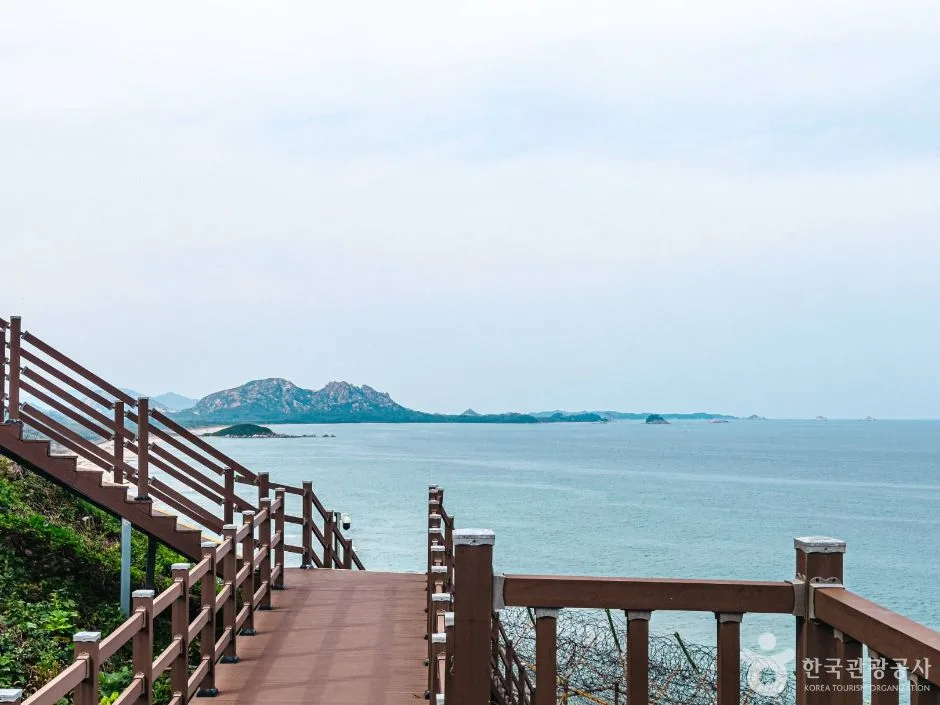
▲ 통일전망대 일대에서 바다와 섬이 보이는 조망. 한국관광공사 통일전망대 코스 사진이다. 사진=한국관광공사
고성군 안내에 따르면 통일안보공원에서 출입신고를 하면 통일전망대(통일전망타워), 6.25전쟁체험전시관, DMZ박물관을 별도 요금 없이 볼 수 있다. 통일전망타워는 높이 34m, 2018년 12월 건립으로, 1층에는 카페와 특산물 판매장, 2층에는 통일홍보관·전망교육실·라운지, 4층에는 전망대와 포토존이 있다. 고성DMZ는 2018년 문화체육관광부와 한국관광공사가 선정한 '한국 관광의 별'(관광매력물 분야 문화자원 부문)을 받았다고 소개된다.
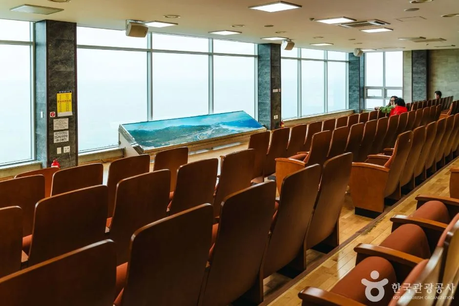
▲ 통일전망타워 내부의 전망 교육 공간으로 보이는 곳. 극장식 좌석과 유리 전망창이 있다. 사진=한국관광공사
| 시설 | 내용 | 운영·요금 |
|---|---|---|
| 통일전망타워 | 높이 34m, 2018년 12월 건립, 4층 전망대·포토존 | 통일전망대 입장 요금에 포함 |
| 6.25전쟁체험전시관 | 사진·영상·유물로 전쟁 상황 전시 | 통일전망대 안내에 별도 요금 없이 관람 가능 |
| DMZ박물관 | 2009년 8월 건립, 한국전쟁·휴전선·DMZ 생태 전시. 주소 현내면 통일전망대로 369 | 09:00~17:30(동절기 17:00), 월요일·1월 1일 휴관, 무료, 033-681-0625 |
| 출렁다리·DMZ 생태관찰전망대 | 220m 출렁다리와 전망대, 통일전망대 옆 조성(2026년 완공 예정 보도) | 개장 여부 확인하지 못함 |
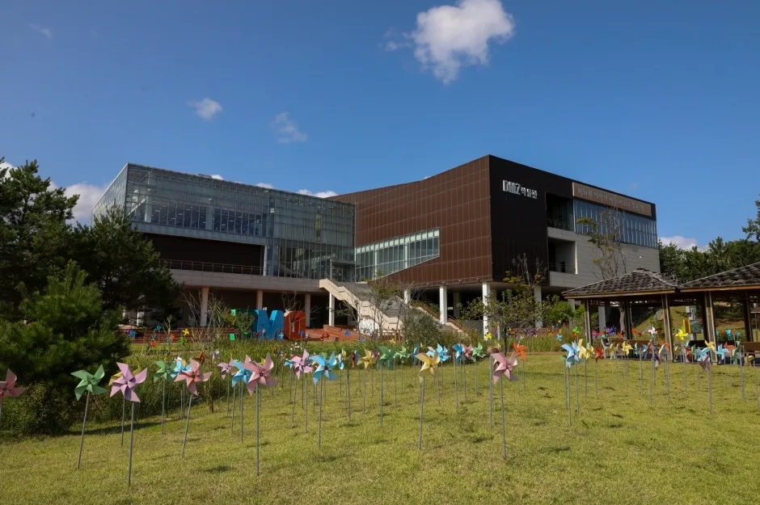
▲ 유리와 갈색 외벽의 DMZ박물관 건물. 사진=한국관광공사
한 여행 매체는 DMZ박물관이 3~10월 09:00~18:00, 11~2월 09:00~17:00로 운영한다고 소개했지만 고성군 요금 안내 페이지는 09:00~17:30(동절기 17:00)이라고 적었다. 공식 페이지를 기준으로 삼았고, 월요일 휴관은 두 곳 모두 일치한다. 서울신문 2월 26일 보도에 따르면 220m 길이 출렁다리와 전망대를 갖춘 DMZ 생태관찰전망대는 2026년 완공 예정이며, 이번 조사에서는 개장 소식을 확인하지 못했다. 2025년 8월 헤럴드경제 보도는 총사업비 127억 원으로 '연말 완성'을 예고했으니 일정이 2026년으로 넘어온 셈이다(보도 간 일정 차이는 사유를 확인하지 못했다). 가을 일정에 넣기 전 고성군에 확인하는 편이 낫다.
4. 화진포 — 호수와 해변, 소나무 숲
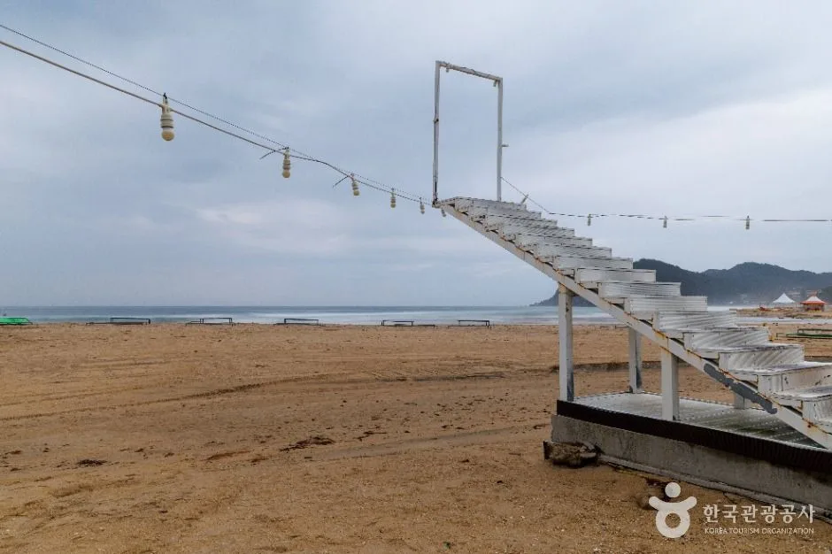
▲ 화진포해수욕장의 해변. 한국관광공사 사진이다. 사진=한국관광공사
한국관광공사는 화진포를 남한에서 가장 넓은 석호로 소개한다. 해변 부근 사취가 만의 입구를 막아 형성됐고, 모양이 8자형이라 남호와 북호로 나뉘며 남호가 더 크고 바다와 통하는 물길은 북호에 있다. 호수 주변에 해당화가 많았다는 데서 이름이 유래했고, 드라마 '가을동화'의 마지막 장면 촬영지로도 알려져 있다. 한 여행 매체는 호수 둘레를 16km로 소개했으나 단일 출처라 확인하지 못한 수치로 둔다.
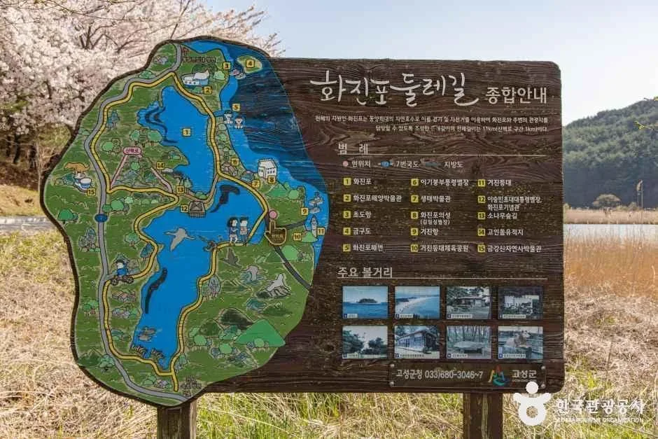
▲ 화진포 둘레길 안내도. 호수를 따라 걷는 구간과 주요 지점이 그려져 있다. 사진=한국관광공사
| 항목 | 내용 | 확인 수준 |
|---|---|---|
| 화진포해수욕장 | 상시 개방, 소형 430대 주차 가능 | 한국관광공사 TourAPI |
| 화진포(호수 일대) | 소형 약 100대·버스 약 10대, 주차 무료, 문의 화진포관광안내소 033-680-3677 | 한국관광공사 TourAPI |
| 이기붕별장 주차 | 소형 약 200대·대형 약 15대 | 한국관광공사 TourAPI |
| 화진포 해양박물관 | 화진포길 412, 09:00~18:00, 연중무휴. 개인 5,000원·청소년/군인 4,000원·어린이 3,000원 | 고성군 관광포털, 033-680-3674 |
| 호수 둘레 거리 | 약 16km 소개 | 여행 매체 단일 출처, 확인하지 못함 |
| 방식 | 코스 | 특징 |
|---|---|---|
| 차로 이동 + 짧은 산책 | 호수 주차장 → 호숫가·소나무 숲길 → 별장 | 자차 여행에 가장 현실적, 주차 무료(한국관광공사) |
| 해변 산책 | 화진포해수욕장 → 해변 | 상시 개방, 소형 430대 주차 |
| 호수 일주 | 둘레 약 16km로 소개(단일 출처) | 자전거·장거리 도보 전제라 일정 여유 필요, 공식 거리 미확인 |
화진포 호수와 해변은 별도 입장료 없이 걸을 수 있고, 별장과 박물관은 유료다. 호숫가에서 별장까지는 소나무 숲길이 이어진다. 별장 요금은 다음 장에서 정리한다.
5. 김일성·이승만·이기붕 별장 — 요금과 운영을 공식표로 확인
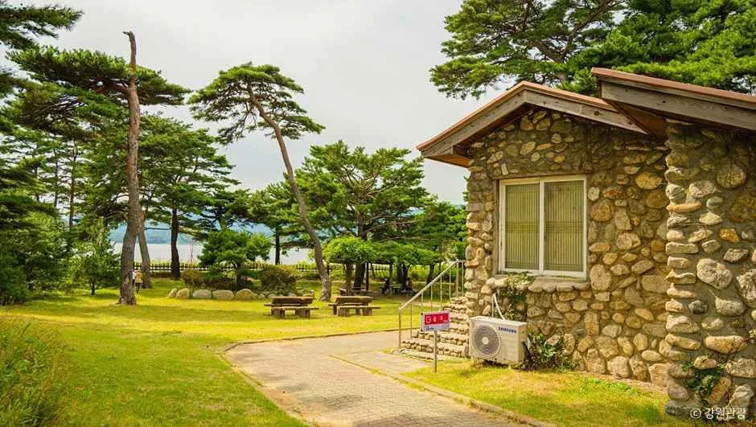
▲ 돌로 외벽을 쌓은 이기붕별장. 한국관광공사 사진 목록에 이기붕별장으로 등록된 사진이다. 사진=한국관광공사
고성군 관광포털의 주요 관광지 요금 안내는 화진포 역사안보전시관과 셔우드 홀 문화공간을 통합발권으로 묶고 있다. 문의처에는 관광안내소(화진포길 280) 033-680-3677, 김일성별장 033-680-3469, 이승만별장 033-681-3227, 셔우드 홀 문화공간 033-680-4391이 적혀 있다. 한국관광공사의 화진포역사안보전시관 소개는 이승만 초대 대통령, 김일성, 이기붕·박마리아 등이 별장을 지어 여름을 보낸 근대 역사의 자취가 남은 곳이라고 설명한다.
| 구분 | 내용 |
|---|---|
| 개인 요금 | 어른 4,000원, 청소년 3,000원, 어린이 3,000원 |
| 단체(30인 이상) | 어른 3,000원, 청소년·어린이 2,500원 |
| 면제 | 고성군민, 65세 이상, 국가유공자, 1~3급 장애인, 현역군인(육·해·공군) |
| 매표 시간 | 09:00~17:00(동절기 09:00~16:30) |
| 운영 시간 | 09:00~18:00(동절기 09:00~17:30) |
| 휴무 | 연중무휴 |
| 주소 | 화진포길 300-1(역사안보전시관), 화진포길 278(셔우드 홀) |
| 주의 | 한국관광공사 TourAPI에는 구 요금(어른 3,000원, 청소년·어린이 2,300원)이 남아 있어 고성군 공식표 4,000원을 기준으로 한다 |
이 표가 세 별장 각각의 입장권을 모두 포함하는지는 공식표에 "통합발권"이라고만 적혀 있어 단정하지 못했다. 한 여행 매체는 세 별장과 생태박물관을 합친 통합권이 4,000원이고 주차가 포함된다고 소개했지만 이는 단일 출처다. 현장 매표소에서 포함 범위를 묻고 사는 편이 정확하다.
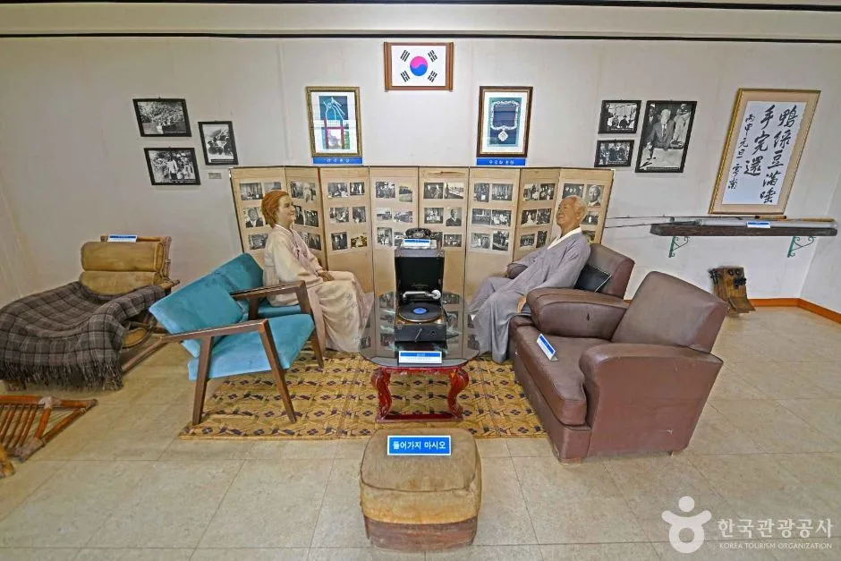
▲ 전시관 내부의 재현 공간. 인형과 소품으로 당시 방을 꾸며 놓았다. 사진=한국관광공사
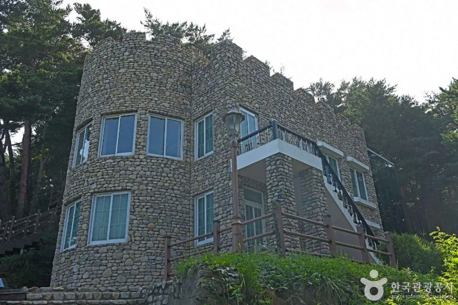
▲ 한국관광공사 목록에 화진포역사안보전시관으로 등록된 석조 건물. 정확히 어느 별장인지는 단정하지 않는다. 사진=한국관광공사
| 별장 | 핵심 내용 | 확인 수준 |
|---|---|---|
| 김일성별장(화진포의 성) | 1938년 독일인(H. 베버로 소개)이 지었고 1948~1950년 김일성 가족이 여름 휴양지로 썼다는 설명이 한국관광공사 계열 안내와 여러 여행·지역 매체에서 일치한다. 고성군 공식 페이지 수치와 달리 건립 경위는 이번에 공식 문서로 대조하지 못했다 | 여러 2차 출처(공식 문서 미대조) |
| 이승만별장(화진포역사안보전시관) | 이승만 초대 대통령이 여름을 보낸 별장. 한국관광공사 안내는 화진포역사안보전시관을 세 별장을 아우르는 시설로 소개하며, 건물별 대응은 단정하지 않는다 | 한국관광공사 안내 |
| 이기붕별장 | 1920년대 외국인 선교사가 지은 건물로, 해방 후 북한 간부 휴양소로 쓰였고 이기붕의 부인 박마리아가 개인 별장으로 사용. 1999년 7월 전시관으로 개수 | 한국관광공사 안내(이승만별장과 김일성별장 사이 호숫가) |
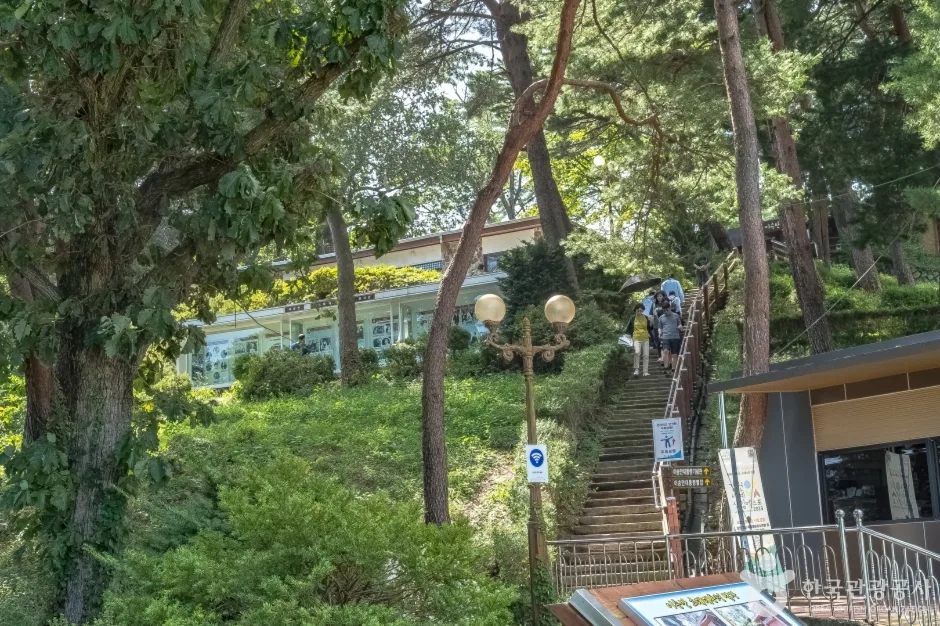
▲ 소나무 숲 사이 계단이 이어지는 별장 진입부. 한국관광공사 사진 목록에 이승만별장으로 등록된 사진이다. 사진=한국관광공사
운영 시간·요금은 고성군 관광포털 요금 안내에서 확인할 수 있다. 고성군 관광지 요금 안내 바로가기
6. 동해안 7번 국도 연계 — 청간정·송지호·화진포·통일전망대
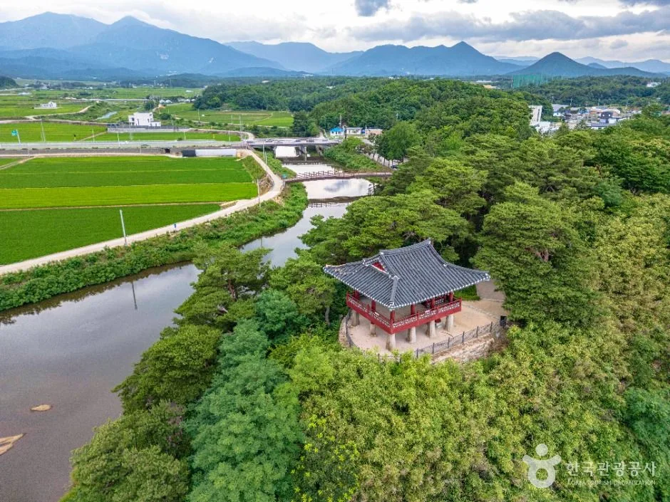
▲ 숲 속에 자리한 청간정 항공 사진. 한국관광공사 사진이다. 사진=한국관광공사
고성은 동해안을 따라 올라가는 7번 국도의 끝자락에 가깝다. 아래 장소들은 도로명주소가 동해대로로 표기되는 구간과 그 인근에 있어 자차로 이어 보기 좋다. 통일전망대 권역은 마지막에 넣어야 시간 여유가 생긴다.
| 장소 | 주소·운영 | 메모 |
|---|---|---|
| 청간정 | 토성면 동해대로 5110 | 운영시간 확인하지 못함 |
| 천학정 | 토성면 천학정길 10 | 운영시간 확인하지 못함 |
| 송지호관망타워·비지터센터 | 죽왕면 동해대로 6021, 입장 09:00~17:20(동절기 16:40), 연중무휴, 무료 | 고성군 관광포털. 비치코밍 체험은 별도 요금 |
| 화진포(호수·별장) | 거진읍·현내면 일대, 별장 매표 09:00~17:00 | 4~5장 참고 |
| 통일전망대 | 현내면 금강산로 481, 최종 출입 16:50 이전 | 2~3장 참고 |
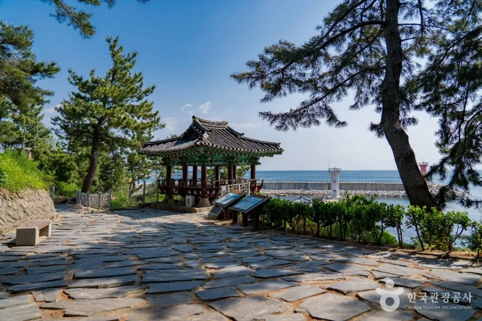
▲ 바다 앞에 세운 천학정 정자와 석재 포장 마당. 한국관광공사 사진이다. 사진=한국관광공사
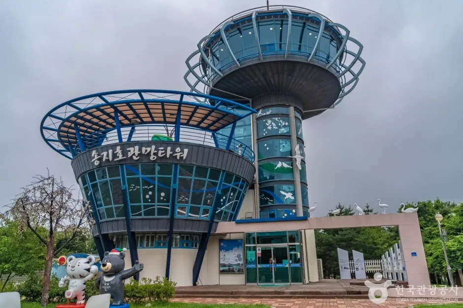
▲ 송지호 일대의 관망타워 외관. 한국관광공사 송지호둘레길 사진 목록에 있다. 사진=한국관광공사
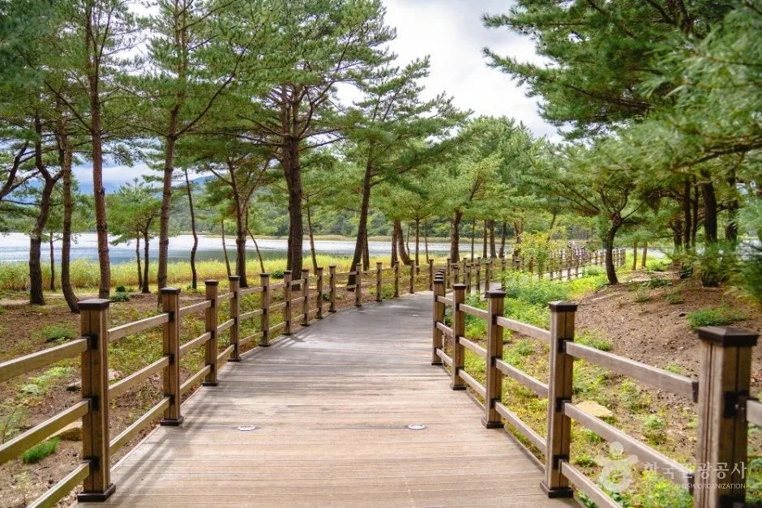
▲ 송지호 둘레길의 소나무 사이 데크길. 푸른 잎이 짙은 여름철 사진이다. 사진=한국관광공사
송지호관망타워는 고성군이 입장 09:00~17:20로 안내하는 무료 시설이다. 천학정·청간정은 이번 조사에서 입장 요금과 운영시간을 확인하지 못했으므로 일정에 넣을 때 현장 확인이 필요하다.
| 장소 | 가을 풍경 기대 | 비고 |
|---|---|---|
| 화진포 호수·소나무 숲 | 호수와 상록 소나무 위주, 단풍은 제한적(추정) | 이 글의 사진은 단풍철이 아닌 시기 것임 |
| 통일전망대 | 동해와 해금강 조망 중심, 맑은 날 시야가 관건 | 기상·군사작전에 따라 출입 조정 가능 |
| 송지호 | 호수와 데크길 산책 | 실제 단풍 상황은 고성군에 확인 |
7. 하루 코스와 자차 팁 — 비용 계산 포함
아래 일정은 공식 운영시간(통일전망대 최종 출입 16:50, 별장 매표 17:00)을 바탕으로 한 카프리즘의 추정 제안이다. 이동 시간은 공식 자료를 찾지 못해 적지 않았다.
| 시간대 | 일정 | 요점 |
|---|---|---|
| 09:00~10:30 | 화진포 호숫가 산책, 화진포해수욕장 | 무료. 주차는 호수 주차장 무료 |
| 10:30~12:00 | 이기붕·이승만·김일성 별장(통합권) | 매표 17:00(동절기 16:30) 마감 |
| 12:00~13:30 | 점심 | 식당·요금은 확인하지 않음 |
| 13:30~15:30 | 통일안보공원 도착 → 출입신고·교육 → 통일전망대·DMZ박물관 | 최종 출입 16:50 이전, 신분증 지참 |
| 15:30~ | 귀가 또는 대진·마차진 해변 방향 산책 | 일몰 시각 확인하지 못함 |
| 항목 | 계산 | 금액 |
|---|---|---|
| 통일전망대 입장 | 3,000원 × 2 | 6,000원 |
| 통일전망대 주차(11인승 미만) | 5,000원 | 5,000원 |
| 화진포 별장 통합권 | 4,000원 × 2 | 8,000원 |
| DMZ박물관 | 무료 | 0원 |
| 합계 | 화진포 호수 주차 무료 기준 | 19,000원 |
합계는 화진포 해양박물관(1인 5,000원), 먹거리 비용, 다른 연계 장소 요금을 제외했다. 고성군민 할인과 65세 이상 요금은 반영하지 않았다.
ℹ️ 확인하지 못한 항목
2026년 1월 보도된 통일전망대 출입 자유화의 실제 시행 여부, 하절기·동절기 적용 기간, 동승자 신분증 지참 요건, 출렁다리·DMZ 생태관찰전망대 개장 여부, 청간정·천학정 운영시간, 화진포 별장 통합권이 세 별장을 모두 포함하는지, 호수 둘레 거리는 공식 자료로 확인하지 못했다. 방문 전 통일전망대(033-682-0088), 화진포관광안내소(033-680-3677)에 문의하는 편이 낫다.
8. 정리
통일전망대는 통일안보공원에서 출입신고서(대표자 주민등록증)와 안보교육 7분을 거쳐 자차로 들어가며, 성인 3,000원과 승용차 주차 5,000원을 낸다. 출입 09:00~16:50(하절기 17:50, 동절기 15:50), 연중무휴이고, 안보공원에 최종 출입시간 전에 도착해야 한다. 2026년 1월 출입 자유화 보도는 '전망'이어서 시행 여부는 확인하지 못했고, 당일 운영은 전화로 확인하는 편이 안전하다.
화진포는 남한 최대 석호로, 호수와 해변은 걸어서 둘러볼 수 있고 김일성·이승만·이기붕 별장은 역사안보전시관·셔우드 홀 통합권 4,000원이 공식 요금이다. 오전에 화진포, 오후 15시 안팎에 통일전망대로 들어가는 일정을 제안하며, 성인 2명 승용차 기준 입장료·주차료 합계는 19,000원(카프리즘 계산)이다.